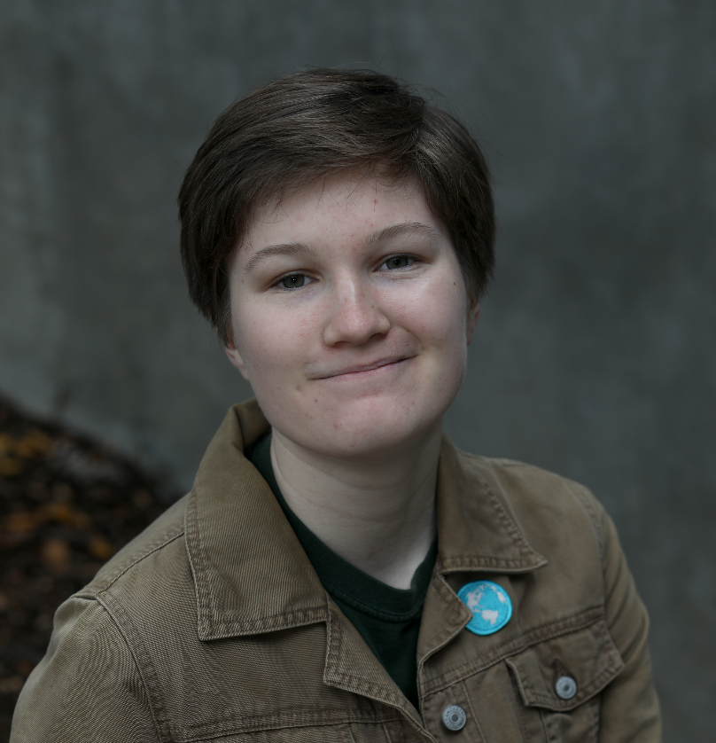

Who am I?
Hi! I'm a recent graduate from the University of Southern California, with a Bachelor's degree in
Computer Science. I'm currently looking for employment as a Software Engineer with specialization in
Machine Learning.
What do I want to do?
A hard question! I have a lot of passions, but my number one is always computer science.
Problem-solving is at the heart of coding, and that's what draws me in every time.
Beyond computer science, I have a deep interest in languages and media. I've studied Japanese and
Latin and almost pursued a minor in Classics, but chose instead to leave room for other electives.
I'm super interested in Japanese language and culture. As well as Roman language,
culture, and history. I really find passion in absolutely random things, and sometimes these
interests are fleeting and intense. I've taken electives in creative writing and animation, but
I've realized that my strengths lie more in supporting creative projects than in leading them. My
experience in technical theater and editing has shown me the value of being the behind-the-scenes
technical support that enables others' creative visions to come to life.
I suppose if I were to give a statement of purpose, it would be this: I want to use computer science
to help people. In an industry often driven by business and profit, my focus is on
leveraging technology to enhance lives—whether through healthcare, entertainment, or other avenues.
|

o
o
o
|
{kind=link}